LAB 5 - Features: Extração de Características
INTEGRANTES:
Igor Domingos da Silva Mozetic - 11202320802
Jhonattan Ferreira Machado - 11202320245
Mikael Alves Monteiro - 21055813
Data de Realização do relatório: 21/07/2025
Data de Publicação do relatório: 28/07/2025
INTRODUÇÃO
A extração e detecção de características (features) é uma etapa fundamental no campo da Visão Computacional, sendo amplamente utilizada em tarefas como reconhecimento de objetos, rastreamento de movimento, reconstrução 3D e realidade aumentada.
Neste laboratório, exploramos os conceitos teóricos e práticos relacionados a essa temática, com foco na aplicação de algoritmos clássicos como Harris, Shi-Tomasi, SIFT e a Transformada de Hough.
O objetivo principal deste experimento foi compreender como as características podem ser identificadas e descritas em imagens, bem como aplicá-las para encontrar correspondências entre diferentes vistas de um mesmo objeto ou cena. As atividades práticas envolveram a implementação de algoritmos utilizando a biblioteca OpenCV, incluindo o uso de imagens previamente gravadas e capturas em tempo real com câmera estereoscópica.
Este relatório apresenta os procedimentos realizados, os resultados obtidos, uma análise crítica sobre os métodos empregados e uma breve discussão sobre as possíveis aplicações dessas técnicas em contextos reais, como no desenvolvimento do trabalho T1 da disciplina.
Para acessar o arquivo PDF com as instruções que foi utilizado para realização da prática, clique no Link.PROCEDIMENTOS EXPERIMENTAIS
Nessa seção serão abordados os procedimentos experimentais de cada parte do laboratório.
PARTE 1: Processamento Básico nas Imagens e Vídeos.
Nesta etapa, foi realizado um estudo detalhado dos principais conceitos relacionados à detecção e descrição de características em imagens digitais. A base teórica utilizada está presente na documentação oficial do OpenCV, conforme os links abaixo.
Sumário Geral – Feature Detection and Description: https://docs.opencv.org/4.x/db/d27/tutorial_py_table_of_contents_feature2d.html
Esta página serve como índice principal dos tutoriais da biblioteca OpenCV sobre detecção e descrição de características. Nela, estão reunidos os diversos métodos disponíveis na biblioteca para detectar pontos-chave em imagens e calcular seus descritores, além de apresentar técnicas de correspondência entre imagens.
Entendendo sobre Features: https://docs.opencv.org/4.x/df/d54/tutorial_py_features_meaning.html
Este tutorial aborda o conceito fundamental de "features", explicando o que são características locais em uma imagem, como cantos, bordas e pontos salientes que são facilmente detectáveis e rastreáveis. São elementos importantes porque permitem descrever e comparar partes de imagens diferentes, sendo essenciais para algoritmos de reconhecimento e reconstrução.
Detector de Harris: https://docs.opencv.org/4.x/dc/d0d/tutorial_py_features_harris.html
O detector de Harris é um dos algoritmos clássicos para detecção de cantos. Ele utiliza derivadas da imagem e
uma função de resposta para identificar regiões com variação de intensidade em múltiplas direções. O tutorial
apresenta o funcionamento do algoritmo e sua aplicação prática com a função cv2.cornerHarris().
Detector de Shi-Tomasi: https://docs.opencv.org/4.x/d4/d8c/tutorial_py_shi_tomasi.html
O algoritmo de Shi-Tomasi é uma melhoria do detector de Harris, que considera a menor resposta entre as
direções, garantindo detecção mais robusta de cantos. Ele é usado principalmente com a função
cv2.goodFeaturesToTrack(), sendo muito eficaz em sistemas de rastreamento de movimento e
aplicações
em vídeos.
Introdução ao SIFT (Scale-Invariant Feature Transform): https://docs.opencv.org/4.x/da/df5/tutorial_py_sift_intro.html
O SIFT é um dos algoritmos mais poderosos e populares para detecção e descrição de características.
Ele é invariante a escala, rotação e mudanças de iluminação, tornando-se ideal para correspondência entre
imagens com diferentes pontos de vista. O tutorial apresenta a função SIFT_create() e como
utilizá-la para detectar keypoints e gerar descriptors.
PARTE 2: SIFT.
(A) Elaborar um programa OpenCV, que realize a operação “Feature Matching + Homography to find Objects”, deste tutorial: https://docs.opencv.org/4.x/d1/de0/tutorial_py_feature_homography.html
- este programa deverá ler duas imagens previamente gravadas que contenham o mesmo objeto em posições distintas. No final mostrar conforme o tutorial, as correspondências obtidas.
Nessa alternativa do relatório, foi solicitado para elaborar um programa OpenCV que leia previamente duas imagens e aplique o conhecimento adquirido nos estudos realizados na PARTE 1.
Para isso, foi realizado a captura das imagens a seguir:
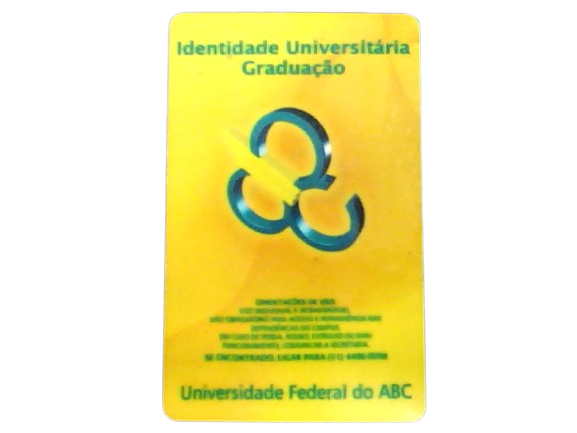
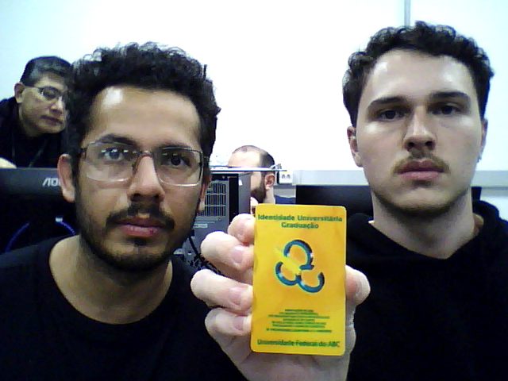
Após realizar a captura, foi elaborado o seguinte código para que o objeto pudesse ser identificado na cena:
import numpy as np
import cv2 as cv
from matplotlib import pyplot as plt
MIN_MATCH_COUNT = 10
# Carregar as imagens em escala de cinza
img1 = cv.imread('item.png', cv.IMREAD_GRAYSCALE) # queryImage
img2 = cv.imread('item-na-imagem.png', cv.IMREAD_GRAYSCALE) # trainImage
# Iniciar o detector SIFT
sift = cv.SIFT_create()
# Encontrar os keypoints e descritores com o SIFT
kp1, des1 = sift.detectAndCompute(img1, None)
kp2, des2 = sift.detectAndCompute(img2, None)
# Parâmetros para o FLANN matcher
FLANN_INDEX_KDTREE = 1
index_params = dict(algorithm=FLANN_INDEX_KDTREE, trees=5)
search_params = dict(checks=50)
# Inicializar o FLANN-based Matcher
flann = cv.FlannBasedMatcher(index_params, search_params)
# Realizar a correspondência dos descritores
matches = flann.knnMatch(des1, des2, k=2)
# Armazenar todas as boas correspondências conforme o teste de razão de Lowe
good = []
for m, n in matches:
if m.distance < 0.7 * n.distance:
good.append(m)
# Verificar se as correspondências são suficientes para calcular a homografia
if len(good) > MIN_MATCH_COUNT:
# Obter os pontos correspondentes nas duas imagens
src_pts = np.float32([kp1[m.queryIdx].pt for m in good]).reshape(-1, 1, 2)
dst_pts = np.float32([kp2[m.trainIdx].pt for m in good]).reshape(-1, 1, 2)
# Calcular a homografia usando RANSAC
M, mask = cv.findHomography(src_pts, dst_pts, cv.RANSAC, 5.0)
matchesMask = mask.ravel().tolist()
# Transformar a perspectiva
h, w = img1.shape
pts = np.float32([[0, 0], [0, h - 1], [w - 1, h - 1], [w - 1, 0]]).reshape(-1, 1, 2)
dst = cv.perspectiveTransform(pts, M)
# Desenhar o polígono da transformação de perspectiva
img2 = cv.polylines(img2, [np.int32(dst)], True, 255, 3, cv.LINE_AA)
# Desenhar as boas correspondências
img3 = cv.drawMatches(img1, kp1, img2, kp2, good, None, **{
'matchColor': (0, 255, 0), # Cor das correspondências
'singlePointColor': (255, 0, 0), # Cor dos pontos-chave
'flags': 2
})
# Exibir a imagem com as correspondências e a transformação
plt.imshow(img3)
plt.show()
else:
print("Não há correspondências suficientes - {}/{}".format(len(good), MIN_MATCH_COUNT))
O código realiza detecção e correspondência de características locais entre duas imagens usando SIFT e FLANN.
As imagens são carregadas em escala de cinza com cv.imread(). Em seguida, é utilizado o
detector SIFT para extrair keypoints e descritores das duas imagens.
Os descritores são comparados com o FlannBasedMatcher utilizando knnMatch()
(k=2). As correspondências são refinadas pelo critério de razão de Lowe
(m.distance < 0.7 * n.distance) para reduzir falsos positivos.
Se o número de matches for maior que MIN_MATCH_COUNT, é computada uma matriz de homografia com
cv.findHomography() usando RANSAC, estimando uma transformação projetiva entre as imagens.
A transformação é aplicada aos vértices da imagem de referência para localizar sua projeção na imagem de
destino, utilizando cv.perspectiveTransform(). O resultado é desenhado com
cv.polylines() e as correspondências com cv.drawMatches().
Por fim, o resultado é exibido com matplotlib.pyplot. Se não houver correspondências
suficientes, o código apenas imprime uma mensagem informativa.
(B) Elaborar outro programa OpenCV, modificando o codigo acima, para fazer a leitura de duas webcams da camera estereoscópica calibrada, mostrando o resultado em video.
Nesta etapa do experimento, foi solicitada a modificação do código elaborado na Alternativa A da PARTE 2, com o objetivo de permitir a captura de imagens em tempo real utilizando duas webcams. A proposta consistiu em identificar, a partir de uma imagem de referência, os pontos em comum detectados nas imagens capturadas por ambas as câmeras, realizando a correspondência entre eles e traçando visualmente as correspondências identificadas.
Portanto, segue o código alterado para execução da alternativa B:
import cv2 as cv
import numpy as np
import subprocess
MIN_MATCH_COUNT = 30
# Carregar imagem de referência
img_ref_gray = cv.imread('item.png', cv.IMREAD_GRAYSCALE)
if img_ref_gray is None:
raise Exception("Imagem de referência 'item.png' não encontrada.")
img_ref_color = cv.cvtColor(img_ref_gray, cv.COLOR_GRAY2BGR)
# Inicializar SIFT e extrair keypoints da imagem de referência
sift = cv.SIFT_create()
kp_ref, des_ref = sift.detectAndCompute(img_ref_gray, None)
# Inicializar FLANN matcher
FLANN_INDEX_KDTREE = 1
index_params = dict(algorithm=FLANN_INDEX_KDTREE, trees=5)
search_params = dict(checks=50)
flann = cv.FlannBasedMatcher(index_params, search_params)
# Inicializar webcams
cap_left = cv.VideoCapture(0)
cap_right = cv.VideoCapture(2)
if not cap_left.isOpened() or not cap_right.isOpened():
raise Exception("Não foi possível acessar uma ou ambas as webcams.")
# Redimensionar imagem de referência para combinar com o tamanho das câmeras
img_ref_color = cv.resize(img_ref_color, (400, 480))
# Pegar resolução das câmeras
frame_width = 640
frame_height = 480
# Tamanho final da imagem combinada
output_width = 400 + frame_width * 2
output_height = frame_height
# Inicializar gravação
fourcc = cv.VideoWriter_fourcc(*'XVID')
fps = 12.0
out = cv.VideoWriter('video-sift.avi', fourcc, fps, (output_width, output_height))
print("Gravando automaticamente... Pressione 'q' para sair.")
while True:
ret1, frame_left = cap_left.read()
ret2, frame_right = cap_right.read()
if not ret1 or not ret2:
print("Erro ao capturar vídeo.")
break
frame_left = cv.resize(frame_left, (frame_width, frame_height))
frame_right = cv.resize(frame_right, (frame_width, frame_height))
gray_left = cv.cvtColor(frame_left, cv.COLOR_BGR2GRAY)
gray_right = cv.cvtColor(frame_right, cv.COLOR_BGR2GRAY)
# Detectar keypoints nas câmeras
kp_left, des_left = sift.detectAndCompute(gray_left, None)
kp_right, des_right = sift.detectAndCompute(gray_right, None)
if des_left is None or des_right is None:
continue
# Função para encontrar boas correspondências com a imagem de referência
def get_good_matches(des_cam, kp_cam):
matches = flann.knnMatch(des_ref, des_cam, k=2)
good = [m for m, n in matches if m.distance < 0.7 * n.distance]
matched_kp_indices = [m.trainIdx for m in good]
matched_kps = [kp_cam[i] for i in matched_kp_indices]
matched_desc = des_cam[matched_kp_indices] if len(matched_kp_indices) > 0 else None
return matched_kps, matched_desc
good_kp_left, good_des_left = get_good_matches(des_left, kp_left)
good_kp_right, good_des_right = get_good_matches(des_right, kp_right)
if good_des_left is None or good_des_right is None:
continue
matches = flann.knnMatch(good_des_left, good_des_right, k=2)
final_matches = [m for m, n in matches if m.distance < 0.7 * n.distance]
# Desenhar correspondências entre câmera esquerda e direita
img_matches = cv.drawMatches(
frame_left, good_kp_left,
frame_right, good_kp_right,
final_matches, None,
matchColor=(0, 255, 0),
singlePointColor=(255, 0, 0),
flags=2
)
# Combinar imagem de referência + correspondência
combined = cv.hconcat([img_ref_color, img_matches])
# Mostrar imagem
cv.imshow("Referencia e Cameras", combined)
# Gravar imagem combinada
out.write(combined)
if cv.waitKey(1) & 0xFF == ord('q'):
break
# Encerrar recursos
cap_left.release()
cap_right.release()
out.release()
cv.destroyAllWindows()
# Caminho do arquivo de entrada e saída
input_file = 'video-sift.avi'
output_file = 'video-sift.mp4'
# Comando FFmpeg
command = [
'ffmpeg',
'-i', input_file,
'-vcodec', 'libx264',
'-crf', '18',
'-preset', 'medium',
output_file
]
# Executar comando
try:
subprocess.run(command, check=True)
print("Conversão concluída com sucesso.")
except subprocess.CalledProcessError as e:
print(f"Erro durante a conversão: {e}")
O código realiza detecção e emparelhamento de características com SIFT em tempo real entre duas câmeras (esquerda e direita) e uma imagem de referência, gravando o resultado e convertendo o vídeo ao final.
A imagem 'item.png' é carregada em escala de cinza e convertida para BGR para exibição.
O detector SIFT extrai os keypoints e descritores da imagem de referência.
O FlannBasedMatcher é inicializado para realizar a correspondência entre descritores da
imagem de referência e os frames das câmeras, com filtro pela razão de Lowe.
As câmeras são acessadas via cv.VideoCapture() (esquerda e direita), e os frames são
redimensionados para padronização. Também é iniciado um VideoWriter para salvar os frames
combinados.
A cada iteração do loop, os descritores das duas câmeras são extraídos e comparados com os da imagem de
referência. As correspondências entre as duas câmeras (após filtro) são desenhadas com
cv.drawMatches().
A imagem de referência é concatenada horizontalmente com o resultado das câmeras usando
cv.hconcat(), exibida em tempo real e salva no vídeo de saída.
Ao final, os recursos são liberados e o vídeo video-sift.avi é convertido para
video-sift.mp4 com FFmpeg, utilizando o codec H.264 e parâmetros de
qualidade/compressão definidos.
PARTE 3: Hough Transform.
(C) Elaborar um programa OpenCV, que realize a operação “Hough Transform”, deste tutorial: https://learnopencv.com/hough-transform-with-opencv-c-python/
- este programa deverá várias imagens previamente gravadas que contenham linhas e circulos. No final mostrar, conforme o tutorial, as linhas e circulos obtidas.
Nessa alternativa do relatório, foi solicitado para elaborar um programa OpenCV que leia previamente algumas imagens que contenham as formas de linhas e circulos e aplicar o conhecimento adquirido nos estudos realizados na PARTE 1.
Para isso, foi escolhido as imagens a seguir:
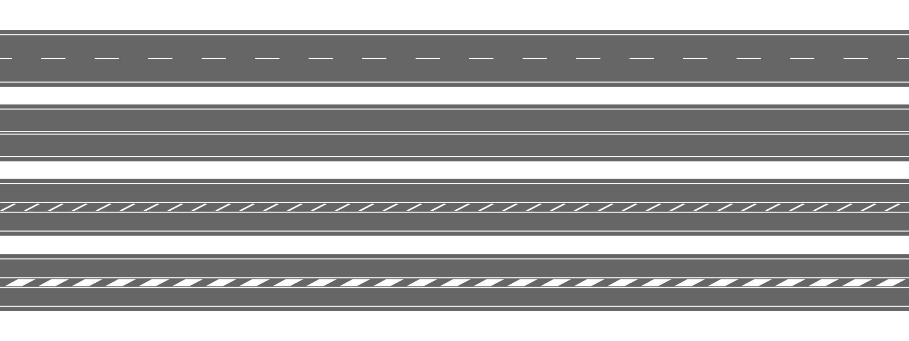
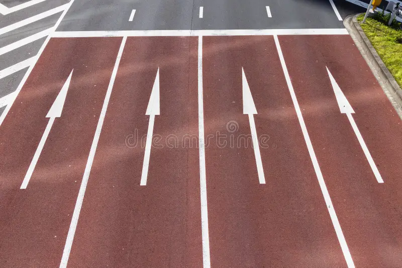
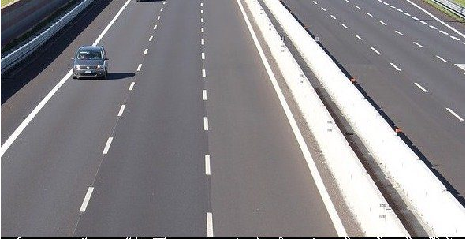
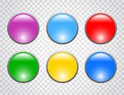
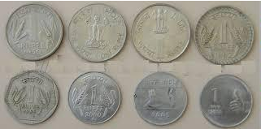
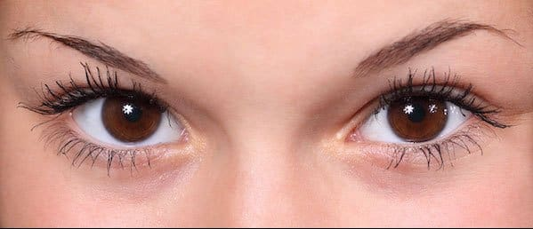
Após a definição das imagens, foi elaborado o seguinte código para que as linhas pudessem ser identificadas nas imagens:
import cv2
import numpy as np
# Leitura da imagem
img = cv2.imread('pt-3.0-lanes.jpg', cv2.IMREAD_COLOR)
img2 = cv2.imread('pt-3.0-lanes2.jpg', cv2.IMREAD_COLOR)
img3 = cv2.imread('pt-3.0-lanes3.png', cv2.IMREAD_COLOR)
# Conversão para escala de cinza
gray = cv2.cvtColor(img, cv2.COLOR_BGR2GRAY)
gray2 = cv2.cvtColor(img2, cv2.COLOR_BGR2GRAY)
gray3 = cv2.cvtColor(img3, cv2.COLOR_BGR2GRAY)
# Detectar bordas com Canny
edges = cv2.Canny(gray, 50, 200)
edges2 = cv2.Canny(gray2, 50, 200)
edges3 = cv2.Canny(gray3, 50, 200)
# Parâmetros da HoughLinesP
rho = 1 # Resolução em pixels
theta = np.pi / 180 # Resolução angular em radianos
threshold = 100 # Número mínimo de interseções
min_line_length = 10 # Comprimento mínimo da linha
max_line_gap = 250 # Distância máxima entre segmentos conectáveis
# Detectar linhas com HoughLinesP
lines = cv2.HoughLinesP(edges, rho, theta, threshold, minLineLength=min_line_length, maxLineGap=max_line_gap)
lines2 = cv2.HoughLinesP(edges2, rho, theta, threshold, minLineLength=min_line_length, maxLineGap=max_line_gap)
lines3 = cv2.HoughLinesP(edges3, rho, theta, threshold, minLineLength=min_line_length, maxLineGap=max_line_gap)
# Desenhar as linhas detectadas
if lines is not None:
for line in lines:
x1, y1, x2, y2 = line[0]
cv2.line(img, (x1, y1), (x2, y2), (255, 0, 0), 2)
if lines2 is not None:
for line in lines2:
x1, y1, x2, y2 = line[0]
cv2.line(img2, (x1, y1), (x2, y2), (255, 0, 0), 2)
if lines3 is not None:
for line in lines3:
x1, y1, x2, y2 = line[0]
cv2.line(img3, (x1, y1), (x2, y2), (255, 0, 0), 2)
# Exibir o resultado
cv2.imshow("Linhas detectadas imagem 1", img)
cv2.imshow("Linhas detectadas imagem 2", img2)
cv2.imshow("Linhas detectadas imagem 3", img3)
cv2.waitKey(0)
cv2.destroyAllWindows()
O código realiza a detecção de linhas em três imagens usando o algoritmo Hough Transform Probabilística (HoughLinesP), após a detecção de bordas com o operador de Canny.
As imagens 'pt-3.0-lanes.jpg', 'pt-3.0-lanes2.jpg' e
'pt-3.0-lanes3.png' são carregadas em formato colorido e convertidas para tons de cinza com
cv2.cvtColor().
O detector de bordas Canny é aplicado às imagens com limiares de 50 e 200, gerando contornos
bem definidos que serão usados na etapa seguinte.
As linhas são detectadas com cv2.HoughLinesP(), que utiliza os parâmetros:
rho = 1 (resolução em pixels), theta = π/180 (resolução angular),
threshold = 100 (mínimo de interseções para validar uma linha), além de
minLineLength e maxLineGap para controlar o comprimento mínimo e a distância
máxima entre segmentos conectáveis.
Se houver linhas detectadas, elas são desenhadas sobre a imagem original com cv2.line() na cor
azul (BGR: (255, 0, 0)) e espessura 2 pixels.
Por fim, as três imagens com as linhas sobrepostas são exibidas em janelas separadas utilizando
cv2.imshow(). O programa espera o pressionamento de uma tecla para encerrar, com
cv2.waitKey(0), e libera os recursos com cv2.destroyAllWindows().
E o seguinte código foi elaborado para que os círculos pudessem ser identificados nas imagens:
import cv2
import numpy as np
# Read images as color
img = cv2.imread('pt-3.0-circles.jpg', cv2.IMREAD_COLOR)
img2 = cv2.imread('pt-3.0-circles2.png', cv2.IMREAD_COLOR)
img3 = cv2.imread('pt-3.0-circles3.png', cv2.IMREAD_COLOR)
# Convert to gray-scale
gray = cv2.cvtColor(img, cv2.COLOR_BGR2GRAY)
gray2 = cv2.cvtColor(img2, cv2.COLOR_BGR2GRAY)
gray3 = cv2.cvtColor(img3, cv2.COLOR_BGR2GRAY)
# Blur the images to reduce noise
img_blur = cv2.medianBlur(gray, 5)
img_blur2 = cv2.medianBlur(gray2, 5)
img_blur3 = cv2.medianBlur(gray3, 5)
# Apply Hough Transform to detect circles in the images
circles = cv2.HoughCircles(img_blur, cv2.HOUGH_GRADIENT, 1, 40, param1=50, param2=40, minRadius=10, maxRadius=40)
circles2 = cv2.HoughCircles(img_blur2, cv2.HOUGH_GRADIENT, 1, 40, param1=50, param2=40, minRadius=10, maxRadius=50)
circles3 = cv2.HoughCircles(img_blur3, cv2.HOUGH_GRADIENT, 1, 40, param1=50, param2=40, minRadius=10, maxRadius=50)
# Draw detected circles on the first image
if circles is not None:
circles = np.uint16(np.around(circles))
for i in circles[0, :]:
# Draw outer circle
cv2.circle(img, (i[0], i[1]), i[2], (0, 255, 0), 2)
# Draw inner circle (center)
cv2.circle(img, (i[0], i[1]), 2, (0, 0, 255), 3)
# Draw detected circles on the second image
if circles2 is not None:
circles2 = np.uint16(np.around(circles2))
for i in circles2[0, :]:
# Draw outer circle
cv2.circle(img2, (i[0], i[1]), i[2], (0, 255, 0), 2)
# Draw inner circle (center)
cv2.circle(img2, (i[0], i[1]), 2, (0, 0, 255), 3)
# Draw detected circles on the third image
if circles3 is not None:
circles3 = np.uint16(np.around(circles3))
for i in circles3[0, :]:
# Draw outer circle
cv2.circle(img3, (i[0], i[1]), i[2], (0, 255, 0), 2)
# Draw inner circle (center)
cv2.circle(img3, (i[0], i[1]), 2, (0, 0, 255), 3)
# Show the results
cv2.imshow("Circulos detectados imagem 1", img)
cv2.imshow("Circulos detectados imagem 2", img2)
cv2.imshow("Circulos detectados imagem 3", img3)
cv2.waitKey(0)
cv2.destroyAllWindows()
O código realiza a detecção de círculos em três imagens utilizando a Transformada de Hough para
círculos (cv2.HoughCircles()), após pré-processamento com conversão em tons de cinza
e aplicação de desfoque.
As imagens 'pt-3.0-circles.jpg', 'pt-3.0-circles2.png' e
'pt-3.0-circles3.png' são carregadas em modo colorido e convertidas para escala de cinza com
cv2.cvtColor().
Para reduzir ruídos e melhorar a detecção, é aplicado um filtro de mediana com
cv2.medianBlur(), utilizando kernel de tamanho 5.
A detecção de círculos é feita com cv2.HoughCircles(), utilizando o método
cv2.HOUGH_GRADIENT. Os parâmetros controlam a resolução, distância mínima entre círculos,
limiares de detecção (param1 e param2), e os raios mínimo e máximo dos círculos a
serem detectados.
Se círculos forem encontrados, são arredondados e desenhados sobre as imagens originais com
cv2.circle(), onde o contorno é desenhado em verde e o centro em vermelho.
Por fim, os resultados são exibidos com cv2.imshow() e o programa aguarda o pressionamento de
uma tecla com cv2.waitKey(0) antes de fechar as janelas com
cv2.destroyAllWindows().
(D) Elaborar outro programa OpenCV, modificando o codigo acima, para fazer a leitura de duas webcams da camera estereoscópica calibrada, mostrando o resultado em video.
Nesta etapa do experimento, foi solicitada a modificação do código elaborado na Alternativa C da PARTE 2, com o objetivo de permitir a captura de imagens em tempo real utilizando duas webcams. A proposta consistiu em identificar, as formas (linhas e círculos), realizando a correspondência entre eles e traçando visualmente as identificações.
Portanto, segue o código alterado para execução da identificação das linhas:
import cv2
import numpy as np
import subprocess
# Inicializar as duas webcams (substitua os índices se necessário)
cap_left = cv2.VideoCapture(2)
cap_right = cv2.VideoCapture(0)
if not cap_left.isOpened() or not cap_right.isOpened():
print("Erro: não foi possível abrir as câmeras.")
exit()
# Parâmetros da HoughLinesP
rho = 1
theta = np.pi / 180
threshold = 100
min_line_length = 10
max_line_gap = 250
# Definir o codec e criar o objeto VideoWriter para salvar a gravação
fourcc = cv2.VideoWriter_fourcc(*'XVID')
fps = 30 # ou use cap_left.get(cv2.CAP_PROP_FPS) para pegar o FPS real da câmera
frame_width = int(cap_left.get(cv2.CAP_PROP_FRAME_WIDTH))
frame_height = int(cap_left.get(cv2.CAP_PROP_FRAME_HEIGHT))
# VideoWriter para salvar a gravação
out = cv2.VideoWriter('video-hough-lines.avi', fourcc, fps, (frame_width * 2, frame_height))
print("Pressione 'q' para sair.")
while True:
# Capturar frames das duas câmeras
ret_left, frame_left = cap_left.read()
ret_right, frame_right = cap_right.read()
if not ret_left or not ret_right:
print("Erro ao capturar imagens das câmeras.")
break
def process_frame(frame):
# Converter para escala de cinza
gray = cv2.cvtColor(frame, cv2.COLOR_BGR2GRAY)
# Detectar bordas
edges = cv2.Canny(gray, 50, 200)
# Detectar linhas
lines = cv2.HoughLinesP(edges, rho, theta, threshold,
minLineLength=min_line_length,
maxLineGap=max_line_gap)
# Desenhar linhas
if lines is not None:
for line in lines:
x1, y1, x2, y2 = line[0]
cv2.line(frame, (x1, y1), (x2, y2), (255, 0, 0), 2)
return frame
# Processar os dois frames
processed_left = process_frame(frame_left.copy())
processed_right = process_frame(frame_right.copy())
# Redimensionar para exibição lado a lado (opcional)
processed_left = cv2.resize(processed_left, (640, 480))
processed_right = cv2.resize(processed_right, (640, 480))
# Combinar os dois vídeos lado a lado
combined = np.hstack((processed_left, processed_right))
# Gravar o frame combinado
out.write(combined)
# Exibir
cv2.imshow('Linhas Detectadas - Direita | Esquerda', combined)
# Sair com 'q'
if cv2.waitKey(1) & 0xFF == ord('q'):
break
# Liberar recursos
cap_left.release()
cap_right.release()
out.release()
cv2.destroyAllWindows()
# Caminho do arquivo de entrada e saída
input_file = 'video-hough-lines.avi'
output_file = 'video-hough-lines.mp4'
# Comando FFmpeg
command = [
'ffmpeg',
'-i', input_file,
'-vcodec', 'libx264',
'-crf', '18',
'-preset', 'medium',
output_file
]
# Executar comando
try:
subprocess.run(command, check=True)
print("Conversão concluída com sucesso.")
except subprocess.CalledProcessError as e:
print(f"Erro durante a conversão: {e}")
O código captura vídeo em tempo real de duas webcams, aplica detecção de linhas usando a Transformada de Hough Probabilística (HoughLinesP) e grava os resultados lado a lado em um vídeo AVI, que é posteriormente convertido para MP4 com o FFmpeg.
As webcams são acessadas com cv2.VideoCapture(). Se não forem abertas corretamente, o
programa é encerrado. Parâmetros da HoughLinesP (como rho, theta,
threshold, min_line_length e max_line_gap) são definidos para
controlar a sensibilidade da detecção.
Um objeto cv2.VideoWriter é criado para salvar a gravação em formato AVI,
com resolução combinada (duas imagens lado a lado).
Dentro do laço principal, cada frame das duas câmeras é capturado e processado pela função
process_frame(), que converte a imagem para escala de cinza, detecta bordas com
cv2.Canny() e aplica cv2.HoughLinesP() para detectar e desenhar linhas nas
imagens.
Os dois frames processados são redimensionados e combinados horizontalmente com np.hstack().
O resultado é exibido com cv2.imshow() e salvo com VideoWriter.write().
Ao pressionar a tecla 'q', o loop é encerrado. Recursos como capturas e gravações são
liberados com release() e janelas são fechadas com cv2.destroyAllWindows().
Por fim, o vídeo AVI é convertido para MP4 usando o
subprocess para executar o comando ffmpeg, com codec H.264, qualidade
CRF 18 e preset de compressão medium.
E agora, segue o código alterado para execução da identificação dos círculos:
import cv2
import numpy as np
import subprocess
# Inicializar as duas webcams (substitua os índices se necessário)
cap_left = cv2.VideoCapture(2) # Webcam esquerda
cap_right = cv2.VideoCapture(0) # Webcam direita
if not cap_left.isOpened() or not cap_right.isOpened():
print("Erro: não foi possível abrir as câmeras.")
exit()
# Definir o codec e criar o objeto VideoWriter para salvar a gravação
fourcc = cv2.VideoWriter_fourcc(*'XVID')
fps = 30 # ou use cap_left.get(cv2.CAP_PROP_FPS) para pegar o FPS real da câmera
frame_width = int(cap_left.get(cv2.CAP_PROP_FRAME_WIDTH))
frame_height = int(cap_left.get(cv2.CAP_PROP_FRAME_HEIGHT))
# VideoWriter para salvar a gravação
out = cv2.VideoWriter('video-hough-circles.avi', fourcc, fps, (frame_width * 2, frame_height))
# Função para detectar círculos usando Hough Transform
def detect_circles(frame):
gray = cv2.cvtColor(frame, cv2.COLOR_BGR2GRAY) # Converter para escala de cinza
blurred = cv2.medianBlur(gray, 5) # Reduzir ruído com filtro de mediana
circles = cv2.HoughCircles(blurred, cv2.HOUGH_GRADIENT, 1, 40, param1=50, param2=40, minRadius=10, maxRadius=50)
if circles is not None:
circles = np.uint16(np.around(circles))
for i in circles[0, :]:
# Desenhar o círculo externo
cv2.circle(frame, (i[0], i[1]), i[2], (0, 255, 0), 2)
# Desenhar o centro do círculo
cv2.circle(frame, (i[0], i[1]), 2, (0, 0, 255), 3)
return frame
print("Pressione 'q' para sair.")
while True:
# Capturar frames das duas câmeras
ret_left, frame_left = cap_left.read()
ret_right, frame_right = cap_right.read()
if not ret_left or not ret_right:
print("Erro ao capturar imagens das câmeras.")
break
# Detectar círculos nos frames das webcams
frame_left_with_circles = detect_circles(frame_left.copy())
frame_right_with_circles = detect_circles(frame_right.copy())
# Redimensionar os frames para exibição lado a lado
frame_left_resized = cv2.resize(frame_left_with_circles, (640, 480))
frame_right_resized = cv2.resize(frame_right_with_circles, (640, 480))
# Combinar os frames lado a lado
combined_frame = np.hstack((frame_left_resized, frame_right_resized))
# Gravar o frame combinado
out.write(combined_frame)
# Exibir o resultado
cv2.imshow('Circulos Detectados - Esquerda | Direita', combined_frame)
# Sair com a tecla 'q'
if cv2.waitKey(1) & 0xFF == ord('q'):
break
# Liberar os recursos
cap_left.release()
cap_right.release()
out.release()
cv2.destroyAllWindows()
# Caminho do arquivo de entrada e saída
input_file = 'video-hough-circles.avi'
output_file = 'video-hough-circles.mp4'
# Comando FFmpeg
command = [
'ffmpeg',
'-i', input_file,
'-vcodec', 'libx264',
'-crf', '18',
'-preset', 'medium',
output_file
]
# Executar comando
try:
subprocess.run(command, check=True)
print("Conversão concluída com sucesso.")
except subprocess.CalledProcessError as e:
print(f"Erro durante a conversão: {e}")
Este código realiza a detecção de círculos em vídeo ao vivo utilizando a
HoughCircles() do OpenCV em duas webcams simultaneamente, exibindo os resultados lado a lado
e salvando a gravação em vídeo. O resultado final é convertido para formato MP4 com
FFmpeg.
As webcams são inicializadas com cv2.VideoCapture(). A resolução e o FPS são obtidos da
câmera esquerda para configurar o objeto cv2.VideoWriter, que grava os frames processados em
um arquivo .avi.
A função detect_circles() aplica os seguintes passos: conversão do frame para escala de
cinza, redução de ruído com medianBlur() e detecção de círculos usando
cv2.HoughCircles() com o método HOUGH_GRADIENT. Se círculos forem detectados,
são desenhados com cv2.circle().
No laço principal, os frames de ambas as câmeras são capturados e processados. Os resultados são
redimensionados para 640x480 e combinados horizontalmente com np.hstack(). O resultado
combinado é exibido e gravado a cada iteração.
O loop pode ser encerrado pressionando a tecla 'q'. Ao final, todos os recursos são
liberados com release() e cv2.destroyAllWindows().
O vídeo resultante .avi é convertido para .mp4 com codec H.264
usando a biblioteca subprocess para chamar o comando ffmpeg, utilizando
-crf 18 (qualidade alta) e -preset medium (equilíbrio entre velocidade e
compressão).
ANÁLISE E DISCUSSÃO DOS ESTUDADOS REALIZADOS
PARTE 2: SIFT.
(A) Elaborar um programa OpenCV, que realize a operação “Feature Matching + Homography to find Objects”, deste tutorial: https://docs.opencv.org/4.x/d1/de0/tutorial_py_feature_homography.html
- este programa deverá ler duas imagens previamente gravadas que contenham o mesmo objeto em posições distintas. No final mostrar conforme o tutorial, as correspondências obtidas.
Ao executar código apresentado na seção acima, a imagem 'pt-2.2-detecao_item_na_cena.png' é gerada, sendo traçada entre elas os pontos em comum identificando o objeto na cena.
Para executar o código, foi enviado o seguinte comando via terminal:
Python3 code-1-SIFT-A.py
Após processamento, a seguinte imagem foi gerada:
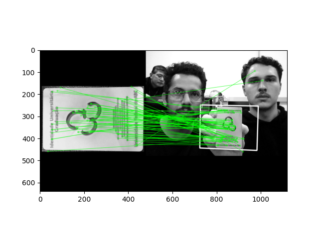
(B) Elaborar outro programa OpenCV, modificando o codigo acima, para fazer a leitura de duas webcams da camera estereoscópica calibrada, mostrando o resultado em video.
Ao executar código apresentado na seção acima, o vídeo 'video-sift.avi' é gerado, e logo após convertido 'video-sift.mp4' sendo exibido a identificação da imagem de referência nas imagens capturadas pelas duas câmeras, traçancdo entre elas os pontos em comum identificando o objeto na cena.
Para executar o código, foi enviado o seguinte comando via terminal:
Python3 code-2-SIFT-B.py
Após processamento, o seguinte vídeo foi gerado:
code-2-SIFT-B.pyPARTE 3: Hough Transform.
(C) Elaborar um programa OpenCV, que realize a operação “Hough Transform”, deste tutorial: https://learnopencv.com/hough-transform-with-opencv-c-python/
- este programa deverá várias imagens previamente gravadas que contenham linhas e circulos. No final mostrar, conforme o tutorial, as linhas e circulos obtidas.
Ao executar código apresentado na seção acima, as imagens 'pt-3.1-lanes1-linhas-detectadas.png', 'pt-3.1-lanes2-linhas-detectadas.png' e 'pt-3.1-lanes3-linhas-detectadas.png' são geradas sendo detectadas as linhas existentes nas imagens traçada.
Para executar o código, foi enviado o seguinte comando via terminal:
Python3 code-3-hough-transform-lines.py
Após processamento, as seguintes imagems foram geradas:
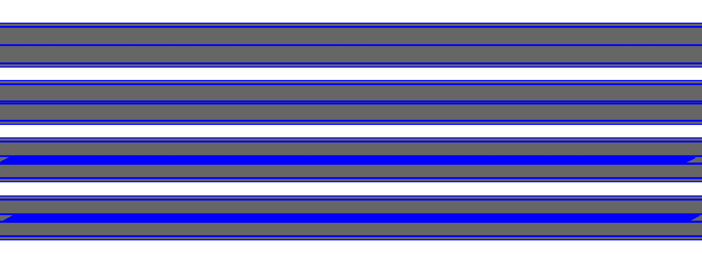
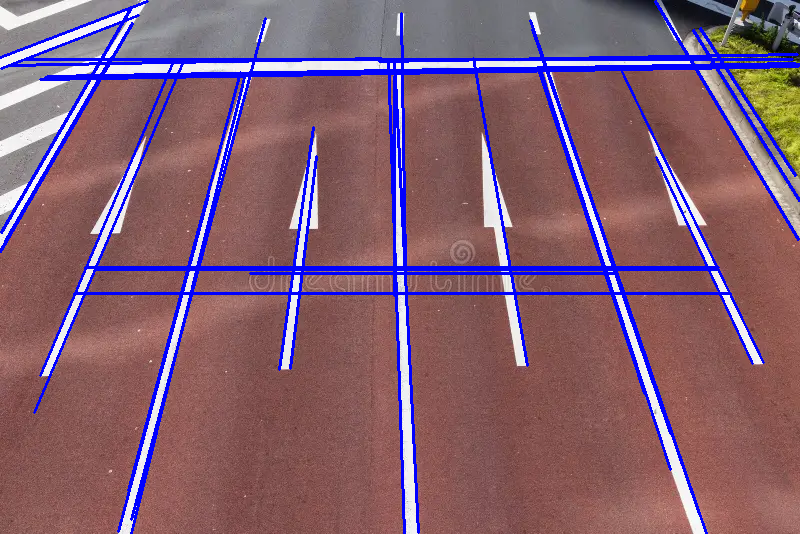
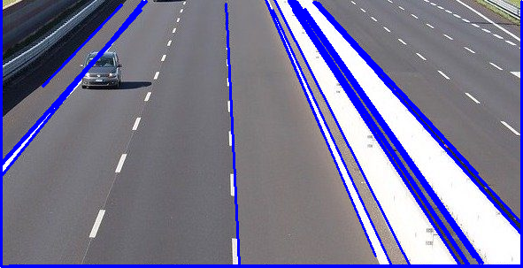
Ao executar código apresentado na seção acima, as imagens 'pt-3.1-circles1-circulos-detectadas.png', 'pt-3.1-circles2-circulos-detectadas.png' e 'pt-3.1-circles3-circulos-detectadas.png' são geradas sendo detectadas as linhas existentes nas imagens traçada.
Para executar o código, foi enviado o seguinte comando via terminal:
Python3 code-4-hough-transform-circle.py
Após processamento, as seguintes imagems foram geradas:
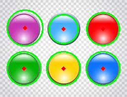
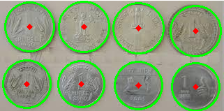
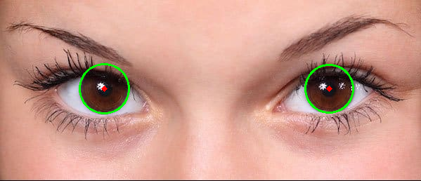
(D) Elaborar outro programa OpenCV, modificando o codigo acima, para fazer a leitura de duas webcams da camera estereoscópica calibrada, mostrando o resultado em video.
Ao executar código apresentado na seção acima, o vídeo 'video-hough-lines.avi' é gerado, e logo após convertido 'video-hough-lines.mp4' sendo exibido a detecção das linhas nas imagens capturadas pelas duas câmeras.
Para executar o código, foi enviado o seguinte comando via terminal:
Python3 code-5-hough-transform-2-cams-lines.py
Após processamento, o seguinte vídeo foi gerado:
code-5-hough-transform-2-cams-lines.pyAo executar código apresentado na seção acima, o vídeo 'video-hough-circles.avi' é gerado, e logo após convertido 'video-hough-circles.mp4' sendo exibido a detecção dos círculos nas imagens capturadas pelas duas câmeras.
Para executar o código, foi enviado o seguinte comando via terminal:
Python3 code-6-hough-transform-2-cams-circles.py
Após processamento, o seguinte vídeo foi gerado:
code-6-hough-transform-2-cams-circles.pyANÁLISE: APLICAÇÕES DA DETECÇÃO DE FEATURES E RELEVÂNCIA PARA O TRABALHO T1
Aplicações Relevantes da Detecção de Features
- Reconhecimento e correspondência de objetos: Algoritmos como SIFT, SURF e Harris são usados para identificar e comparar objetos em diferentes imagens ou pontos de vista, mesmo sob variações de escala, rotação e iluminação. Por exemplo, o SIFT aplica correspondência de pontos-chave seguida de filtragem por razão de distâncias para evitar falsos positivos.
- Visão estéreo e reconstrução 3D: A combinação de detectores de características com correspondência em pares de imagens permite gerar mapas de profundidade, essenciais para estimativa de distância, navegação autônoma e reconstrução de cenários tridimensionais.
- Robótica e percepção ambiental: Robôs utilizam detecção de *features* para evitar obstáculos, reconhecer objetos manipuláveis e realizar mapeamento do ambiente. A detecção de features robustas melhora a precisão em contextos de efeito sensorial ou variação de iluminação.
- Indexação de imagens e recuperação baseada em conteúdo: Detectores como Harris e suas variantes (ex.: Harris-affine) são aplicados em sistemas de recuperação de imagens, permitindo a indexação de objetos-chave e situações repetíveis em vídeos ou bases multimídia.
Aplicação no Trabalho T1
- Detecção inicial de pontos-chave na imagem de referência utilizando SIFT ou Shi‑Tomasi, permitindo identificar regiões distintas que serão buscadas em ambas câmeras.
- Correspondência entre imagens estéreo, aplicando um matcher como Brute‑Force ou FLANN para encontrar pares de *keypoints* entre os dois streams, e filtragem com RANSAC para garantir correspondência geométrica robusta.
- Estimativa de profundidade e paralaxe, permitindo traçar os mesmos pontos detectados nas duas webcams para calcular disparidade e inferir distância ou pose relativa do objeto.
- Visualização de correspondências: destacar graficamente os pares encontrados entre câmeras, ilustrando os pontos comuns e validando a precisão da calibração.
Contribuições esperadas para o projeto
A utilização dessas técnicas trará benefícios ao T1, como:
- Robustez contra alterações de escala, rotação ou iluminação.
- Precisão na correspondência entre câmeras, essencial para reconstrução geométrica estéreo.
- Capacidade de aplicar homografia ou triangulação a partir dos pontos comuns detectados.
- Documentação didática que mistura teoria e prática, facilitando a validação do método científico empregado.
CONCLUSÕES
Este laboratório proporcionou uma compreensão prática e aprofundada sobre os principais métodos de
detecção e descrição de características em imagens, com o uso intensivo da biblioteca
OpenCV. Foram exploradas funções como cv2.goodFeaturesToTrack() para detecção de
cantos pelos métodos de Harris e Shi-Tomasi, cv2.SIFT_create() para extração e descrição de
keypoints, e cv2.HoughCircles() para a detecção de formas geométricas como círculos via
Transformada de Hough.
O uso de cv2.findHomography() em conjunto com cv2.perspectiveTransform() permitiu a
identificação e o mapeamento de objetos em diferentes imagens, mesmo sob transformações geométricas como
rotação, escala e mudança de perspectiva. A aplicação da função cv2.drawMatches() auxiliou na
visualização das correspondências de keypoints entre imagens.
Além disso, a integração de cv2.VideoCapture() e cv2.VideoWriter() viabilizou a
aplicação desses algoritmos em tempo real utilizando webcams estereoscópicas, enquanto
cv2.resize(), np.hstack() e cv2.imshow() facilitaram a manipulação e
exibição simultânea das imagens processadas.
Por fim, a conversão de arquivos de vídeo com subprocess.run() e ffmpeg demonstrou a
interoperabilidade entre Python e ferramentas externas, finalizando um pipeline completo de aquisição,
processamento e exportação de resultados em visão computacional.
REFERÊNCIAS
- OpenCV. Feature Detection and Description – Documentação Oficial . Acesso em: 27 jul. 2025.
- OpenCV. Understanding Features . Acesso em: 27 jul. 2025.
- OpenCV. Harris Corner Detector . Acesso em: 27 jul. 2025.
- OpenCV. Shi-Tomasi Corner Detector . Acesso em: 27 jul. 2025.
- OpenCV. Introduction to SIFT . Acesso em: 27 jul. 2025.
- LearnOpenCV. Hough Transform with OpenCV . Acesso em: 27 jul. 2025.